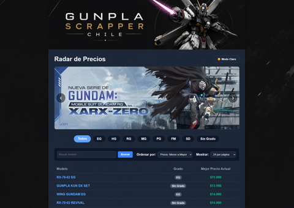
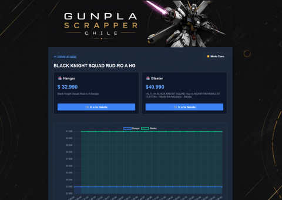
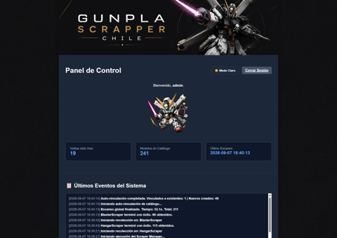
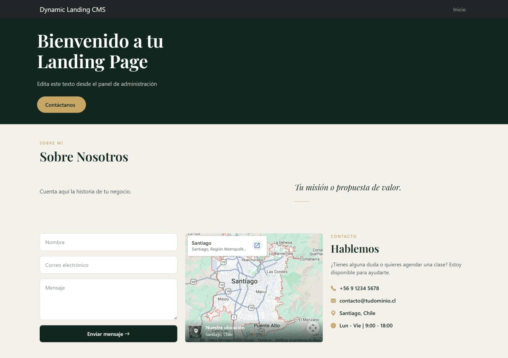
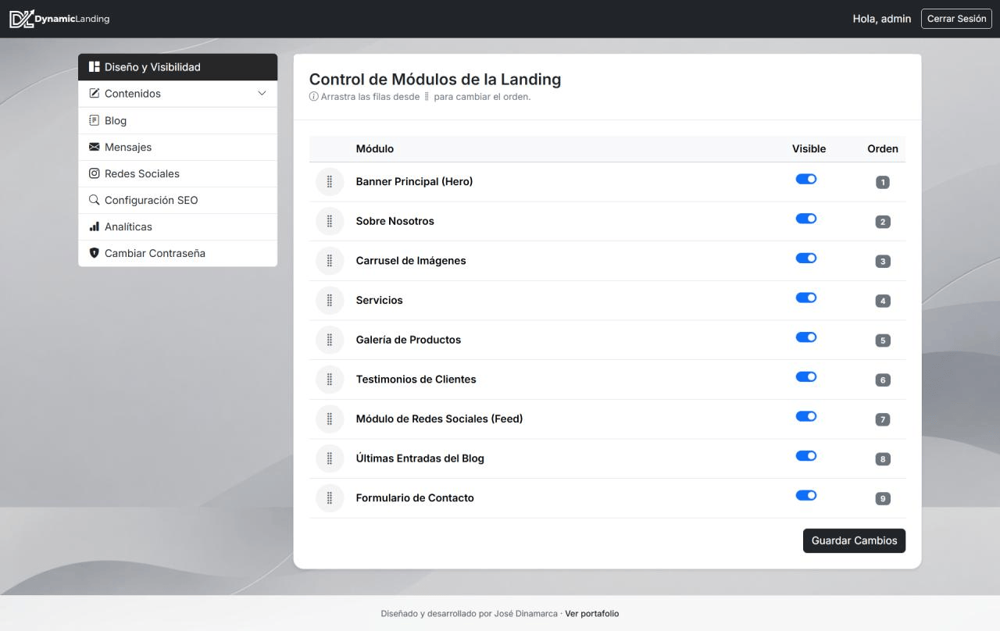

Sobre mí
Desarrollador Full Stack Junior con base en Python/Flask y JavaScript, Ingeniero de Ejecución en Computación e Informática. Vengo de soporte TI y docencia en programación, donde reviso código y acompaño a equipos de estudiantes en el diseño de sus proyectos. He construido aplicaciones web completas por mi cuenta, desde el modelo de datos hasta el panel de administración. Busco mi primer rol como desarrollador Full Stack o Backend, en modalidad remota o híbrida.
Descargar CV (PDF)Proyectos Destacados
GunplaScraper-Chile
Herramienta de automatización y Web Scraping para monitoreo de mercado en tiempo real de coleccionables en Chile. Desarrollo enfocado en extracción de datos, procesamiento y centralización de información.
- Plataforma que recolecta precios de 8 tiendas e-commerce chilenas cada 12 horas (scraping programado con APScheduler) y guarda el historial de más de 400 productos en SQLite.
- Arquitectura modular con Flask Blueprints, capa de acceso a datos y un scraper independiente por tienda, además de registro de acciones administrativas.
- Catálogo unificado que fusiona productos duplicados entre tiendas, con filtros, ordenamiento, paginación, gráficos de precios históricos y modo oscuro.



DynamicLanding
DynamicLanding es un CMS modular desarrollado con Flask y SQLite para crear y administrar landing pages comerciales. Incluye un panel de administración para gestionar contenido, diseño, blog, SEO, redes sociales, visibilidad de módulos y analíticas de tráfico de forma sencilla y centralizada.
- CMS para crear y administrar landing pages comerciales, con panel privado con autenticación y un modelo de datos diseñado a medida.
- Blog con CRUD completo, control de visibilidad y orden de módulos, y configuración SEO (meta título, descripción y Open Graph) editable desde el panel, sin tocar código.
- Módulo de analítica de tráfico con gráficos interactivos por año y mes.


Experiencia Profesional
- Prestación de servicios integrales de consultoría TI y administración de redes para organizaciones locales.
- Implementación de soluciones de impresión centralizada y configuración de sistemas de facturación electrónica para agilizar las operaciones diarias.
- Mantenimiento de hardware a medida e integración de software para optimizar los entornos informáticos de los clientes.
- Reviso y evalúo el código de más de 40 proyectos de software de estudiantes, con foco en principios SOLID, Clean Code y patrones de diseño.
- Guío a equipos de estudiantes en el diseño de arquitectura, la refactorización y la depuración de sus proyectos.
- Diseño material y guías técnicas para Seguridad de Software, Programación Avanzada II, y Gestión de Servicios TI.
- Administré servidores, redes e infraestructura TI para 150 usuarios.
- Configuré políticas de seguridad con firewall PfSense, reduciendo en 35% los incidentes de red.
- Resolví fallas de hardware y software, reduciendo en 20% los tiempos de inactividad.
Stack Técnico y Educación
Conocimientos Técnicos
Python, Flask, Flask Blueprints, Jinja2, autenticación, paneles de administración, web scraping (Requests, BeautifulSoup4), APScheduler
JavaScript, HTML5, CSS3, Bootstrap, Chart.js, diseño responsivo
SQL, SQLite, PostgreSQL, MySQL, modelado entidad-relación
POO, principios SOLID, Clean Code, patrones de diseño, code review, refactorización
Git, GitHub, VS Code, Linux
Java, C#, Node.js, ReactJS, Docker, MongoDB, Oracle, Power BI
Scrum (certificado SFC), metodologías ágiles, Trello, Jira
Educación y Certificaciones
Universidad Católica del Maule (2021 – 2023)
CFT San Agustín (2018 – 2021)
Santander Open Academy · Octubre 2026
ID: OA-2026-1001003269215
SCRUMstudy · Agosto 2024
ID: 1045081
Español nativo
Inglés intermedio B2 (oral y escrito)
Conversemos sobre tu próximo proyecto.
Hablemos de desarrollo, consultoría o nuevas oportunidades profesionales. Escríbeme y hagamos realidad tu idea.